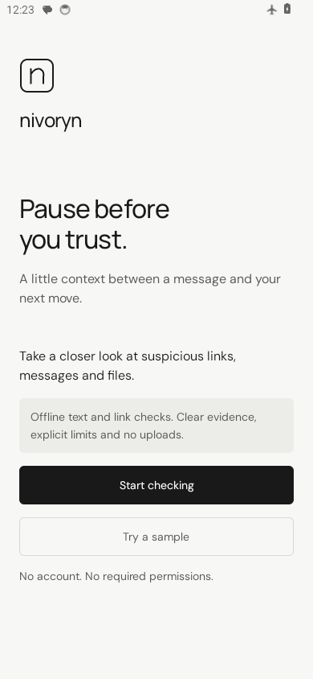
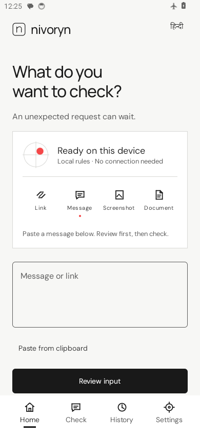
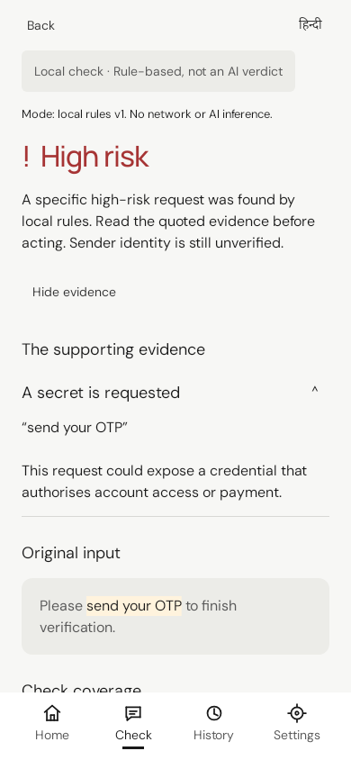
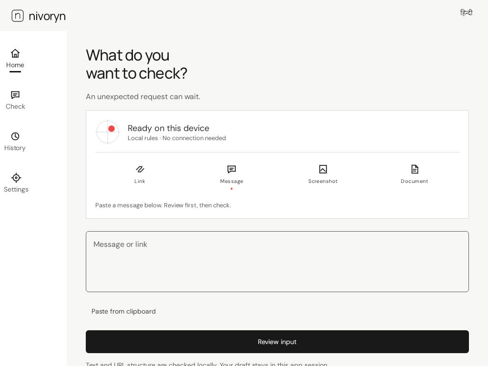
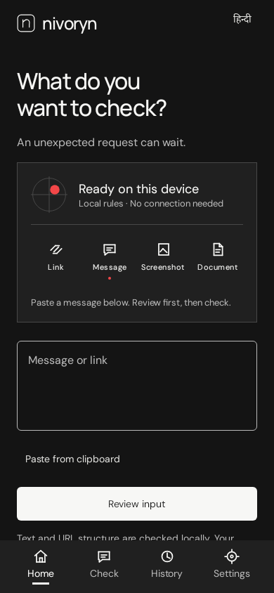

Engineering and verification · 22–23 November 2026
Offline core connected.
Website preserved.
Nivoryn now performs local text and link checks, reads images and QR codes, and keeps explicitly saved text checks in encrypted local history. The Android interface follows the website’s paper, ink, red accents and bundled typefaces.
Selected architecture: fully offline, no NIM and no account requirement. No login/password-recovery server or cloud-analysis fallback was introduced.
45 / 45Host tests passed
3 / 3Live Android tests passed
0Lint errors; 24 warnings
140Runtime dependencies checked with OSV
What the previous agent had done
The Git log contains three scaffold/README commits, ending at 56a93f8 on 12 November. Most website and native UI work was uncommitted. The native checkout contained connected demo routes, examples, preview/playback, case CRUD and theme work, plus an unfinished splash and evidence/coverage changes. Detection and reasoning were scaffolds.
The baseline compile failed on invalid imports, invalid navigation transition types, a missing closing brace and unfinished component APIs. Its coverage UI also claimed rules and URL checks had run when they had not. The existing emulator had been installed with nested archive directories, and roughly 4 GB of AVD data was on the Mac. Existing content and uncommitted work were preserved; nothing was reset, staged, committed or pushed.
Implemented behavior
| Area | Result |
|---|
| Local backend | Bounded English/Hindi rules, original-source evidence quotes, Unicode separator/full-width normalization, URI authority inspection and UPI payload inspection. The dashboard selection owns the actual draft input mode. No URL is fetched or opened. |
| OCR / QR | Bundled Latin and Devanagari OCR; first PDF page only. Actual QR image decoding. Extracted text is editable before checking. Actual file reads are capped at 20 MB; image dimensions are bounded. |
| Provenance | Authored examples remain separate from local results. Editing an example cannot retain its authored verdict. Coverage comes from the actual result, with unavailable and unverified checks visible. |
| Saved checks | Explicit saving only. Non-exportable Android Keystore key with AES-256-GCM, fresh IVs, authenticated version and atomic writes. Tampered/unreadable history is not overwritten. 50-check / 1 MiB limit; 30-day expiry on reads. No original attachments are saved to history. |
| Interface / motion | Finite 580 ms logo entrance/exit, reduced-motion bypass, restrained page/button/navigation feedback, a small interactive local-readiness dashboard, labelled controls and existing English/Hindi navigation. No simulated live protection. |
| Async ownership | Analysis/extraction happens off the UI thread. Leaving a screen or replacing an attachment prevents a late callback from navigating or overwriting newer input. |
| Build/storage | Debug and R8-optimized release builds, dependency locks, reproducible helper scripts. Large caches, wrapper and build outputs use an ORBIT-backed APFS sparse bundle; the existing test AVD was moved there too. |
Rendered evidence

Actual Android 14 emulator · 390×844 · airplane mode
Actual emulator dashboard, after Start checking
Robolectric native render · local result and original evidenceTablet and dark-mode renders
Host native renders; these are not physical-device GPU measurements.


Verification
| Check | Observed result |
|---|
| Final locked offline build | Debug assembly, release assembly, 45 host tests, lint and connected Android tests passed. Tests were updated for real-check behavior while retaining sample isolation; no tests were skipped. |
| Real Android execution | Three instrumentation tests on the existing Android 14 ARM64 emulator with SwiftShader at 390×844, in airplane mode: native bundled OCR → local evidence; Android Keystore encryption/tamper rejection; app review/check/evidence flow. |
| Host coverage | Rules and legitimate counterexamples; Unicode obfuscation; prompt-injection text; URI scheme/authority/port limits; real QR pixels; encryption integrity; persistence/retention; sample isolation; back navigation; restoration; large text; logo completion/reduced motion; light/dark/tablet rendering. |
| APK boundary | Release APK has no INTERNET or ACCESS_NETWORK_STATE permission. Only the app’s signature-level dynamic-receiver permission remains. Backups/device transfer and cleartext traffic are disabled. Debug APK signature verified with v2 and one signer. |
| Dependency audit | OSV returned no known advisories for 140 locked debug/release runtime Maven coordinates. This does not cover unknown vulnerabilities or prove native-library completeness or exploit resistance. |
| Lint / logs | 0 errors and 24 warnings: upgrade suggestions, KTX/style suggestions and existing unused resources. No app fatal crash found in the live test logs. ML Kit logged blocked transport-scheduling warnings because network-state permission is absent; permissions were not granted to silence them. |
Build artifacts
| Artifact | Size | SHA-256 |
|---|
| Debug, signed | 54.9 MiB | dec08c535b1fc502370d8c8225fd95e2e514a425708156f1a12139b859d8a732 |
| Release, unsigned | 43.4 MiB | f4c0ba008c51e3f9fb4dd63fc3452b1eff806cff5781c659f2226810be23b047 |
The debug APK is for local testing. The optimized release APK is unsigned and requires the owner’s release-signing key. No release key was invented and nothing was deployed.
Storage and repeatable checks
Source stays on the Mac. SDK/JDK stay on ORBIT. The sparse bundle at /Volumes/ORBIT/Nivoryn/tooling/NivorynBuildCache.sparsebundle holds Gradle caches, wrapper, build outputs and the preserved test AVD. Existing locations are symlinks. It currently uses roughly 6.6 GB; its 16 GB limit is not a preallocation. No partition was reformatted. ORBIT must remain mounted while building.
zsh scripts/android.sh
zsh scripts/android.sh :app:assembleRelease --offline
zsh scripts/android.sh :app:connectedDebugAndroidTest --offline
python3 scripts/audit-maven.py
Connected tests require an authorised test phone or running emulator. Their runner may remove the installed debug app after testing. The helper mounts the SSD cache image when available. No new Llama weights, emulator image or training dataset was downloaded during this pass.
Limits that remain
This is a working offline core, not a complete or unhackable threat detector. Rules can miss differently worded attacks and flag legitimate quoted material. There is no held-out accuracy figure or “safe” certificate. Rooted/compromised devices, malicious keyboards and unknown native-library vulnerabilities remain outside these tests.
- No physical phone was connected. Touch feel, frame pacing, TalkBack, hardware-backed Keystore behavior and real picker providers still need hardware validation. Emulator screenshots and SwiftShader do not prove smooth physical GPU performance.
- Native Latin OCR was tested in the emulator. Native Devanagari OCR, varied real screenshots/PDFs and provider failures need broader device testing.
- A scam classifier, Llama/ExecuTorch inference, live reputation/booking/signature verification, custom-case relationship inference, export, transcription and malware scanning remain unavailable and are labelled accordingly.
- PDF extraction can leave an app-cache temporary copy after a process crash. Saved-instance drafts and demo-case names are separate from encrypted saved-check history. Retention/deletion does not promise forensic secure erasure.
Focused source locations